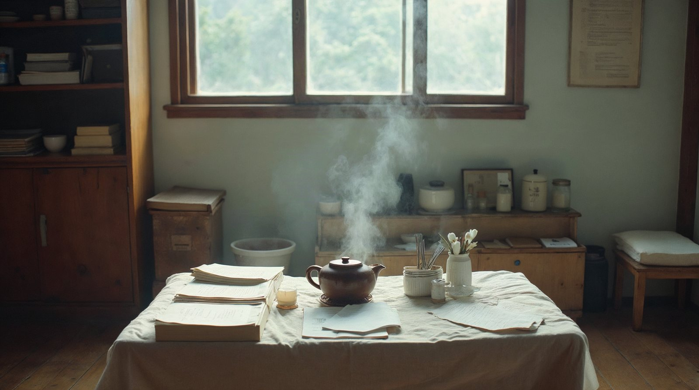
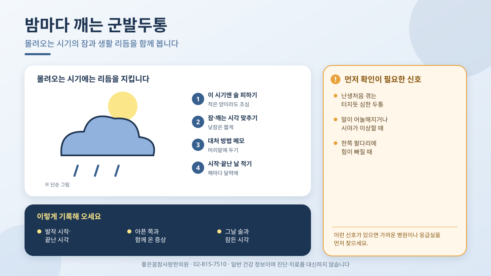

이종호 한의사 감수좋은꿈참사랑한의원 대표원장 (한의사 면허번호 19769)발행 2026-11-26 · 수정 2026-11-26
이 글의 차례
새벽 두 시쯤, 깊이 잠들어 있다가 한쪽 눈 뒤를 송곳으로 찌르는 듯한 통증에 벌떡 일어납니다. 누워 있을 수가 없어 방 안을 서성이고, 아픈 쪽 눈에서는 눈물이 흐르고 코가 막힙니다. 한 시간쯤 지나면 거짓말처럼 가라앉는데, 다음 날 밤 비슷한 시각에 또 찾아옵니다.
이렇게 한쪽 눈 주변이 몹시 심하게 아프고, 같은 쪽 눈물과 콧물, 눈 충혈이 함께 오며, 하루 중 비슷한 시각에 되풀이된다면 군발두통을 먼저 떠올려 봅니다. 군발두통은 두통이 몇 주에서 몇 달 동안 무리 지어(群發) 몰려왔다가, 한동안 잠잠해지는 흐름을 보여 이런 이름이 붙었습니다.
군발두통은 진단과 발작 때 쓰는 치료가 따로 있어서 신경과 진료가 먼저입니다. 한의원에서는 그 곁에서 잠과 술, 긴장, 계절에 따라 반복되는 몸의 흐름을 함께 살핍니다.
진료실에서 이 두통을 겪은 분께 이런 말씀을 듣습니다. "머리를 벽에 박고 싶을 만큼 아팠어요." 과장이 아니라는 것을 압니다. 겪어 보지 않은 사람은 상상하기 어려운 통증이라, 주변에서 "두통약 먹고 좀 누워 있어" 하는 말이 오히려 서운하게 들렸다는 분도 많습니다.
왜 한쪽 눈 주변이 이렇게 아플까요
군발두통의 정확한 원인은 아직 다 밝혀지지 않았습니다. 다만 우리 몸의 하루 리듬을 맡은 뇌의 시상하부라는 곳과, 얼굴 감각을 맡은 삼차신경, 눈과 코 주변 혈관이 함께 얽혀 일어나는 것으로 이해되고 있습니다.
하루 중 비슷한 시각에, 그리고 해마다 비슷한 계절에 되풀이되는 경우가 많은 것도 몸의 시계와 관련이 있다고 봅니다. 봄가을 환절기에 시작되었다는 말씀을 자주 듣습니다.
통증이 한쪽 눈 주변에 몰리면서 같은 쪽 눈물과 콧물, 눈 충혈, 눈꺼풀 처짐, 얼굴 땀이 함께 오는 것도 이 때문입니다. 눈과 코 주변을 조절하는 신경이 한꺼번에 흥분하는 셈이지요.
군발두통은 여성보다 남성에게 더 흔하다고 알려져 있고, 담배를 피우는 분에게 더 많다는 보고도 있습니다. 두통이 몰려오는 시기에는 술을 조금만 마셔도 곧바로 발작이 오는 경우가 많아, 그 시기만큼은 술을 피하시도록 말씀드립니다.
한의학에서는 한쪽 머리와 눈 주변이 심하게 아픈 것을 편두통(偏頭痛)이나 미릉골통(眉稜骨痛) 등으로 나누어 살펴 왔습니다. 저는 두통 자체만이 아니라 잠드는 시각과 몸의 열감, 술과 긴장의 흐름을 함께 보며 몸이 어느 쪽으로 기울어 있는지를 읽으려 합니다.
편두통, 긴장성 두통과는 어떻게 다를까요
편두통
편두통은 대개 몇 시간에서 길게는 사흘까지 이어지고, 욱신욱신 맥박 치듯 아프며, 빛과 소리가 싫고 메스꺼움이 함께 옵니다. 그래서 편두통이 오면 어두운 방에 가만히 누워 있고 싶어집니다. 군발두통은 한 번이 15분에서 세 시간 정도로 더 짧고, 통증이 훨씬 날카로우며, 가만히 있지 못하고 서성이게 되는 경우가 많다는 점이 다릅니다.
긴장성 두통
긴장성 두통은 머리 양쪽이나 뒷목이 띠를 두른 듯 조이고 묵직하게 아픈 두통입니다. 일상생활을 할 수는 있을 정도인 경우가 많고, 눈물이나 콧물 같은 증상은 잘 동반하지 않습니다.
축농증과 눈 질환
축농증은 광대와 이마가 묵직하게 눌리며 누런 콧물과 코막힘이 며칠씩 이어집니다. 군발두통의 콧물은 맑고, 발작이 끝나면 함께 멎는다는 점이 다릅니다.
삼차신경통
삼차신경통은 얼굴에 몇 초씩 전기가 오듯 번쩍이는 통증이 세수나 양치 같은 자극에 튀어 오릅니다. 군발두통은 한 번 오면 수십 분 이상 이어지고, 건드리지 않아도 저절로 찾아온다는 점이 다릅니다.
예를 들면 이런 경우입니다
실제 어느 분의 사연이 아니라, 진료실에서 자주 듣는 모습을 바탕으로 그려 본 장면입니다.
예를 들어 해마다 환절기가 되면 몇 주 동안 밤마다 같은 시각에 깨는데, 그 시기가 지나면 한동안 멀쩡해서 그냥 넘겨 온 분이 계실 수 있습니다. 이럴 때는 몇 해 동안 언제 시작해 언제 끝났는지부터 함께 정리해 보고, 신경과 진료를 받으셨는지 여쭙니다.
두통이 몰려오는 시기에 회식에서 맥주 한 잔을 마셨는데 한 시간도 안 되어 눈 뒤가 찌르듯 아파 자리를 뜨게 되었다는 분도 있습니다. 이런 이야기는 그 시기의 술을 어떻게 할지 정하는 중요한 단서가 됩니다.
교대 근무로 잠드는 시각이 매주 바뀌는 분이 두통이 몰려오는 시기를 더 힘들게 보냈다는 이야기도 듣습니다. 근무를 마음대로 바꾸기는 어렵지만, 같은 근무가 이어지는 주에는 잠드는 시각만이라도 일정하게 지켜 보시도록 함께 계획을 세웁니다.
발작이 없는 낮에도 '오늘 밤 또 올까' 하는 생각에 일이 손에 잡히지 않는다는 분도 많습니다. 통증이 남긴 긴장이 낮의 몸까지 붙잡고 있는 셈입니다. 이럴 때는 두통만이 아니라 그 긴장으로 굳은 목과 어깨, 얕아진 잠을 함께 봅니다.
몰려오는 시기와 잠잠한 시기
군발두통이 있는 분들은 한 해를 두 시기로 나눠 사는 것처럼 말씀하십니다. 두통이 몰려오는 몇 주에서 몇 달 동안은 밤이 무섭고, 술자리도 약속도 모두 미룹니다. 그 시기가 지나가면 몇 달, 길게는 몇 해 동안 아무 일 없었다는 듯 지냅니다.
잠잠한 시기에는 두통을 잊고 싶은 마음이 큽니다. 충분히 이해합니다. 다만 저는 그 시기에 지난번 기록을 한 번 정리해 두시길 권합니다. 언제 시작해 얼마나 이어졌는지, 무엇이 발작을 부르는 것 같았는지를 적어 두면 다음 시기를 맞을 때 마음이 한결 덜 흔들립니다.
드물게는 잠잠한 시기 없이 일 년 내내 이어지는 경우도 있다고 알려져 있습니다. 이런 경우는 신경과와 더 긴밀하게 상의하시는 것이 좋습니다.
곁에 있는 가족이 알아 두면 좋은 것
새벽에 가족이 갑자기 일어나 방 안을 서성이고, 머리를 감싸 쥐고, 눈물을 흘리는 모습을 보면 곁에 있는 사람도 몹시 놀랍니다. 이럴 때 억지로 눕히거나 말을 많이 거는 것보다, 조용히 곁을 지키며 불을 낮추고 신경과에서 안내받은 대처 방법을 함께 챙겨 주는 것이 도움이 됩니다.
그리고 두통이 지나간 아침에는 "어젯밤 많이 힘들었지" 하는 한마디를 건네 주세요. 통증만큼 외로움도 크다는 것을 진료실에서 자주 느낍니다.
발작이 지나간 다음 날
밤새 발작을 겪고 나면 다음 날은 몸이 물에 젖은 솜처럼 무겁습니다. 잠이 끊겼으니 당연한 일입니다. 그런데 많은 분이 그 몸을 끌고 평소처럼 출근하고, 커피를 몇 잔씩 더 마시며 버팁니다.
저는 이런 날일수록 낮잠을 짧게 끊고, 저녁에는 평소와 같은 시각에 잠자리에 드시길 권합니다. 무너진 하루를 다른 시간에 몰아서 메우려 하면 몸의 시계가 더 흔들리기 쉽기 때문입니다. 버티는 것만으로도 충분히 애쓰고 계신 날입니다.
먼저 이렇게 여쭙니다
처음 오시면 저는 대략 이런 순서로 여쭙습니다. 기억나는 것부터 말씀해 주셔도 괜찮습니다.
- 아픈 자리는 어느 쪽 눈 주변인가요? 늘 같은 쪽인가요?
- 한 번 오면 얼마나 이어지고, 하루에 몇 번쯤 오나요?
- 주로 몇 시에 오나요? 잠든 지 얼마 뒤에 깨나요?
- 아픈 쪽 눈물, 콧물, 코막힘, 눈 충혈, 눈꺼풀 처짐이 함께 있나요?
- 아플 때 누워 있나요, 가만히 있지 못하고 서성이나요?
- 이런 시기가 해마다 비슷한 계절에 오나요? 마지막은 언제였나요?
- 술과 담배는 어떤가요? 신경과 진료를 받으셨고, 드시는 약은 무엇인가요?
이 질문들의 답이 정리되면 신경과 진료 때도 설명이 훨씬 쉬워집니다. 메모해 두셨다가 그대로 보여 주셔도 됩니다.
일상에서 먼저 해 볼 수 있는 것
두통이 몰려오는 시기와 잠잠한 시기에 따라 챙길 것이 조금 다릅니다. 지금 할 수 있는 것 하나부터 골라 보세요.
- 두통이 몰려오는 시기에는 술을 피하기, 적은 양이라도 조심하기
- 잠드는 시각과 깨는 시각을 일정하게 맞추고, 낮잠은 짧게
- 담배를 피우신다면 줄이거나 끊는 것을 의료진과 상의하기
- 신경과에서 안내받은 발작 때 대처 방법을 메모해 머리맡에 두기
- 발작이 지나간 뒤에는 미지근한 물로 세수하고 다시 누울 자리를 조용히 정리하기
- 해마다 시작된 날과 끝난 날을 달력에 적어 두기
잠의 리듬이 흔들리면 군발두통이 몰려오는 시기에 발작을 부르기 쉽다고 알려져 있습니다. 밤샘이나 늦잠으로 잠드는 시각이 들쭉날쭉해지지 않도록 하는 것이 그 시기의 작은 방패가 됩니다.
해마다 비슷한 시기에 찾아온다면, 그 시기가 다가올 무렵 미리 신경과와 상의해 두는 분들이 많습니다. 달력에 적어 둔 기록이 그 대화의 출발점이 됩니다.
일터에서 미리 나눠 두면 좋은 이야기
두통이 몰려오는 시기에는 야근과 회식, 출장이 가장 큰 고비가 됩니다. 믿을 만한 동료나 상사에게 "이 시기에는 이런 두통이 있다"고 미리 말해 두면, 술자리를 사양하거나 일정을 조정하기가 한결 수월해집니다.
혼자만 알고 버티다 보면 무리한 일정을 거절하지 못해 잠이 무너지기 쉽습니다. 말하기 쉽지 않은 이야기라는 것을 압니다. 그래도 한 사람에게라도 나눠 두면 그 시기를 지나는 마음이 조금 가벼워집니다.

한의원에서 함께 살필 수 있는 경우
- 신경과 진료를 받고 있으면서 잠과 생활 리듬을 함께 살피고 싶은 경우
- 두통이 몰려오는 시기마다 잠이 무너지고 기운이 크게 떨어지는 경우
- 잠잠한 시기에 몸의 흐름을 정리해 두고 싶은 경우
- 두통이 다시 올까 하는 걱정으로 마음이 늘 긴장되어 있는 경우
좋은꿈참사랑한의원에 처음 오시면 신경과 진료 여부와 드시는 약을 먼저 확인합니다. 그다음 양손을 올려 달라고 말씀드리고 맥을 짚으며 잠과 소화, 체온, 땀, 대소변을 여쭙습니다.
진찰 뒤 필요하다고 판단되면 침이나 한약을 상의합니다. 무너진 잠의 리듬과 굳은 목과 어깨, 지친 몸을 함께 살피는 경우가 많습니다. 드시는 약을 모두 알려 주시면 함께 드셔도 되는지 신중하게 확인하고 정합니다.
발작이 올 때의 치료는 신경과에서 정한 방법을 따르시고, 처방받은 약은 처방한 의사와 상의 없이 줄이거나 끊지 않습니다. 다시 오시면 지난번 이후 발작이 몇 번, 몇 시에 왔는지와 잠은 어땠는지부터 이어서 여쭙습니다.
이렇게 기록해 오시면 상담이 쉬워집니다
군발두통은 시각과 날짜가 중요한 단서입니다. 두통이 몰려오는 시기에는 짧게라도 꼭 적어 두세요.
- 발작이 시작된 시각과 끝난 시각
- 아픈 쪽과 자리, 함께 온 증상(눈물, 콧물, 충혈, 눈꺼풀 처짐)
- 그날 잠든 시각과 깬 시각, 낮잠 여부
- 술을 마셨는지, 마셨다면 얼마나, 몇 시간 뒤 시작되었는지
- 발작 때 쓴 치료와 그 뒤의 느낌
- 해마다 시작된 날과 끝난 날
발작 중에는 적기 어려우니 지나간 뒤 한 줄이면 충분합니다. 이 기록은 신경과 진료 때도 그대로 쓰실 수 있습니다.
이런 증상은 먼저 확인이 필요합니다
- 난생처음 겪는, 갑자기 터지듯 시작된 아주 심한 두통
- 두통과 함께 말이 어눌해지거나 한쪽 팔다리에 힘이 빠지거나 시야가 이상한 경우
이런 신호가 있으면 한의원보다 가까운 병원이나 응급실을 먼저 찾으세요.
밤마다 같은 시각에 찾아오는 통증을 기다리는 일은 정말 고단합니다. 그 시간을 버텨 오신 것만으로도 충분히 애쓰셨습니다. 서두르지 않고, 잠의 리듬과 그 시기의 생활부터 같이 정리해 보겠습니다. 다음에 오시면 이번 시기에 발작이 몇 시에 왔는지부터 여쭙겠습니다.
함께 읽으면 좋은 글
- 한쪽 머리가 욱신거리는 편두통은 생활에서 무엇을 기록하나요?
- 스트레스를 받으면 뒷목이 당기고 머리가 아픈 긴장성 두통은 어떻게 살피나요?
- 아침 두통과 저녁 두통은 진료실에서 어떻게 나눠서 말하면 좋을까요?
- 잠을 못 자면 두통이 올 때는 어떻게 살피나요?

여쭙는 것
- 아픈 자리는 어느 쪽 눈 주변인가요? 늘 같은 쪽인가요?
- 한 번 오면 얼마나 이어지고, 하루에 몇 번쯤 오나요?
- 주로 몇 시에 오나요? 잠든 지 얼마 뒤에 깨나요?
생활에서 해 볼 것
- 두통이 몰려오는 시기에는 술을 피하기, 적은 양이라도 조심하기
- 잠드는 시각과 깨는 시각을 일정하게 맞추고, 낮잠은 짧게
- 담배를 피우신다면 줄이거나 끊는 것을 의료진과 상의하기
한의원에서 함께 살필 것
- 신경과 진료를 받고 있으면서 잠과 생활 리듬을 함께 살피고 싶은 경우
- 두통이 몰려오는 시기마다 잠이 무너지고 기운이 크게 떨어지는 경우
- 잠잠한 시기에 몸의 흐름을 정리해 두고 싶은 경우
먼저 확인이 필요한 신호
- 난생처음 겪는, 갑자기 터지듯 시작된 아주 심한 두통
- 두통과 함께 말이 어눌해지거나 한쪽 팔다리에 힘이 빠지거나 시야가 이상한 경우
한눈에 보는 표
| 구분 | 핵심 |
|---|---|
| 여쭙는 것 | 아픈 자리는 어느 쪽 눈 주변인가요? 늘 같은 쪽인가요? 한 번 오면 얼마나 이어지고, 하루에 몇 번쯤 오나요? |
| 생활에서 해 볼 것 | 두통이 몰려오는 시기에는 술을 피하기, 적은 양이라도 조심하기 잠드는 시각과 깨는 시각을 일정하게 맞추고, 낮잠은 짧게 |
| 한의원에서 함께 살필 것 | 신경과 진료를 받고 있으면서 잠과 생활 리듬을 함께 살피고 싶은 경우 두통이 몰려오는 시기마다 잠이 무너지고 기운이 크게 떨어지는 경우 |
| 먼저 확인이 필요한 신호 | 난생처음 겪는, 갑자기 터지듯 시작된 아주 심한 두통 두통과 함께 말이 어눌해지거나 한쪽 팔다리에 힘이 빠지거나 시야가 이상한 경우 |
자주 묻는 질문
군발두통과 편두통은 어떻게 다른가요?
편두통은 몇 시간에서 사흘까지 이어지고 빛과 소리가 싫어 가만히 눕고 싶어지는 경우가 많습니다. 군발두통은 한쪽 눈 주변이 15분에서 세 시간가량 아주 날카롭게 아프고, 같은 쪽 눈물과 콧물이 함께 오며, 가만히 있지 못하고 서성이게 되는 경우가 많습니다. 정확한 구분은 신경과 진료에서 받으세요.
두통이 몰려오는 시기에 술을 조금 마셔도 되나요?
그 시기에는 적은 양의 술에도 발작이 오는 경우가 많아 피하시길 권합니다. 잠잠한 시기의 음주는 신경과와 상의하세요.
군발두통이 있을 때 침을 맞아도 되나요?
신경과 진료와 드시는 약을 확인한 뒤 진찰을 거쳐 정합니다. 발작 때의 치료는 신경과에서 정한 방법을 따르시고, 한의원에서는 잠의 리듬과 지친 몸을 함께 살핍니다.
해마다 같은 계절에 오는데 미리 할 수 있는 것이 있나요?
시작된 날과 끝난 날을 해마다 적어 두시면, 그 시기가 다가올 무렵 신경과와 미리 상의하기 쉬워집니다. 그 무렵에는 잠드는 시각을 일정하게 지키고 술을 피하는 것부터 챙겨 보세요.
일반 두통약을 먹어도 잘 듣지 않아요.
군발두통은 통증이 빠르게 가장 심한 정도까지 오르고 한 번이 비교적 짧아, 먹는 두통약이 듣기 전에 지나가 버리는 경우가 많습니다. 발작 때 쓰는 치료는 따로 있으니 신경과에서 상의해 주세요. 두통약을 자주, 많이 드시는 것도 진료 때 꼭 알려 주세요.
좋은꿈참사랑한의원은 재진 때 지난번 이야기부터 이어서 여쭙니다. 진료시간과 예약은 오시는 길에서 확인하세요.
어디서 상담받을 수 있나요?
좋은꿈참사랑한의원은 서울 동작구 만양로2길 2 신성빌딩 3층·5층(서울 동작구 상도동, 7호선 상도역 3번 출구 근처)에 있습니다. 한의사 3명(이종호 대표원장, 조영기 수석진료원장, 정원영 진료원장)이 진료합니다. 진료시간은 평일 09:30~20:00(점심 13:00~14:00), 토·일·공휴일 09:30~15:00이며, 방문 전 전화로 확인을 권합니다. 예약은 네이버 예약, 카카오톡 상담, 전화 02-815-7510로 받습니다.
이 글은 일반적인 건강 정보이며 개인의 진단이나 치료를 대신하지 않습니다. 증상이 있거나 복용 중인 약이 있다면 진료를 통해 확인하세요. 치료 효과는 개인마다 다를 수 있습니다.
작성 기준: 일반적으로 알려져 있는 건강 정보를 참고해 정리했습니다(대표원장 감수). 증상 기록은 1~2주 동안 하루 1회, 비슷한 시간에 적어 오시면 지난 상태와 비교하기 쉽습니다.